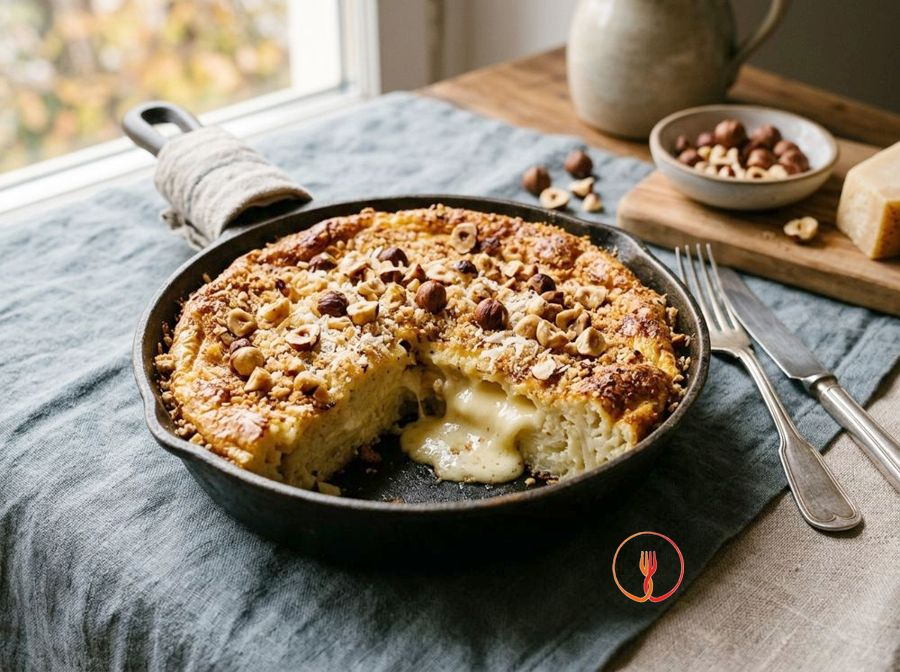

Cauliflower flan with a melting centre and toasted hazelnuts
An indulgent autumnal starter where cauliflower is transformed into a silky purée, enriched with smoked scamorza and the crunch of toasted hazelnuts.
Ingredients
- White cauliflower800g
- Medium eggs2
- Grated Parmigiano Reggiano60g
- Smoked scamorza cheese80g
- Double cream100ml
- Toasted hazelnuts30g
- Butter20g
- Breadcrumbsas needed
- Salt and black pepperto taste
- Nutmega pinch
Allergens
Tree nuts, Gluten, Milk, Eggs
May contain traces of: Celery, Mustard.
Method
- Begin by cleaning the 800g of white cauliflower: remove the green leaves and the hard central core, then break it into small, evenly-sized florets to ensure uniform cooking. Wash the florets under running water and place them in a large pot with plenty of boiling salted water over high heat. Boil for about 15 minutes until the flesh is extremely tender when pierced with the tines of a fork. The result should be soft vegetables that crumble easily, releasing their characteristic aroma. Chef's tip: cut the florets very small to speed up the cooking process and achieve a smoother final puree.
- Drain the cauliflower with extreme care and let it sit in the colander for a minute to remove any residual water that could make the flan too soggy. Transfer the hot florets into a blender or use an immersion blender, processing them until you achieve a smooth, thick puree completely free of lumps. You should get a homogeneous cream that holds its shape well, not a liquid soup. Ensure that most of the steam evaporates during this blending phase. Chef's tip: if the puree still seems too wet, return it to a non-stick pan over medium heat for two minutes to dry out any remaining moisture.
- Transfer the puree to a large bowl and wait for it to become lukewarm, then incorporate the 2 medium eggs and 100ml of double cream, stirring with a spatula. Add the 60g of grated Parmigiano Reggiano and season the mixture with a pinch of nutmeg, salt, and freshly ground black pepper. Whisk vigorously by hand until you have a creamy, ivory-coloured mixture with a uniform consistency. The texture should resemble a very firm pastry cream with a spicy fragrance. Chef's tip: avoid adding the eggs to the boiling puree, or they will cook instantly and create unwanted scrambled egg lumps.
- Prepare 4 individual ramekins, either ceramic or aluminium, by thoroughly greasing the inside with 20g of softened butter, making sure to cover the corners at the bottom. Pour a handful of breadcrumbs into each ramekin and rotate it gently to coat the sides and bottom, then tap out the excess by turning the ramekin upside down. This butter-and-bread 'lining' is essential for allowing the flan to slide out easily after baking. The ramekins should appear matte and evenly coated. Chef's tip: use 'pomade' butter (soft at room temperature) rather than melted butter to create a thicker, more resistant protective layer.
- Fill each ramekin halfway with the cauliflower mixture, levelling the surface with the back of a small spoon. Take the 80g of smoked Scamorza, cut it into 4 equal cubes, and place one in the centre of each ramekin, pressing down slightly to submerge it. Cover with the remaining mixture, filling to about one centimetre from the top edge, as the flan will rise slightly in the oven. You will have created a perfect vessel enclosing a savoury, fragrant heart. Chef's tip: place the cheese cube exactly in the centre to prevent it from touching the sides of the ramekin as it melts, which would make extraction difficult.
- Place the ramekins inside a high-sided baking tray and pour boiling water into the tray until it reaches halfway up the sides of the ramekins. Carefully transfer to a preheated fan oven at 180°C and bake for about 25-30 minutes, monitoring the consistency without opening the door too often. The bain-marie technique ensures gentle and even cooking, keeping the heart of the flan moist and soft as a cloud. The result is achieved when the surface feels firm to the touch and slightly golden. Chef's tip: use already hot water for the bain-marie so as not to lower the oven temperature and to start the cooking process immediately.
- While the flans finish baking, take the 30g of toasted hazelnuts and place them on a stable chopping board. Roughly chop them with a sharp chef's knife, aiming for an irregular texture that includes both small bits and larger, crunchy fragments. This element will provide the necessary textural contrast to balance the softness of the cauliflower and the creaminess of the melted cheese. The toasted aroma released will significantly enrich the dish's aromatic bouquet. Chef's tip: absolutely avoid using an electric chopper, as it would turn the hazelnuts into oily flour, losing the pleasant crunch.
- Remove the ramekins from the oven and let them rest out of the water for about 5 minutes; this short rest allows the structure to stabilise, making extraction easier. Gently run the thin blade of a knife around the inner edge and flip each flan directly onto the centre of an individual serving plate. Garnish generously with the previously prepared chopped hazelnuts and serve immediately while the Scamorza heart is still perfectly melted and stringy. You will have a refined starter with a beautiful visual contrast between the white flan and the brown hazelnuts. Chef's tip: if the flan doesn't release immediately, gently tap the bottom of the inverted ramekin; the trapped steam will help it detach naturally.
Nutrition facts (estimate)
| Per serving (250 g) | Per 100 g | |
|---|---|---|
| Energy | 1657 kJ / 396 kcal | 661 kJ / 158 kcal |
| Protein | 19 g | 7.6 g |
| Carbohydrates | 12 g | 4.7 g |
| of which sugars | 4.8 g | 1.9 g |
| Fat | 29 g | 12 g |
| of which saturates | 15 g | 6.0 g |
| Fibre | 4.8 g | 1.9 g |
| Salt | 1.0 g | 0.4 g |
AI estimates based on average CREA / USDA data: indicative only, not a substitute for medical or dietitian advice.
Open the recipe in the app for the shopping list, ingredient sheets and nearby shops.